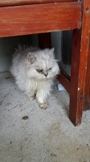

Ceci est ma grande soeur elle a 6mois de plus que moi  (elle est pourtant plus photogenique que l'autre)
J'ai 17 ans et je me suis orienté vers les sciences principalement parceque j'aime les maths et que je veux faire ingenieur éléctronicien
Au cours de ma scolaritée j'ai participé a tous les kangourou des maths que je pouvais faire (pour la regle multi usage;)) puis recement avec Tytouan Botte et Thomas Nicollet on est arrivé troisiémes
au Rallye Math de martinique(maintenant je m'appelle Alexendre GOUTON)
Ecoles frequentées:

CENTRES D'INTERET
Le codage (j'aime le Ti-basic)
Voyages : Italie, Etats-Unis
Et voila fini !